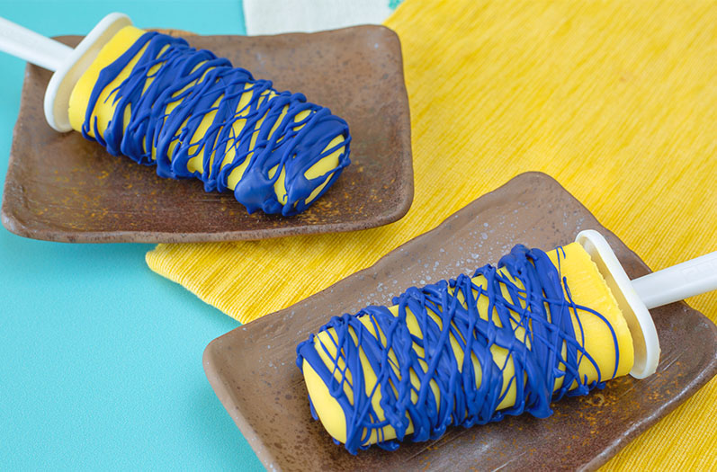

Overwatch: Popsicles

A Cool Treat for Sweltering Times
As battles rage, somtimes the eye of the strom descends on the battleground. This welcome respite is often unexpected, and what better way to celebrate than with a tangy and sweet treat.
Ingredients:
Popsicles:
- 1 cup pineapple chunks
- ½ cup mango
- ¼ sugar
- 2 cups coconut milk
- 10 drops yellow food dye
Candy Fetters:
- 1 cup blue candy melts
- 2 tbsp coconut oil
Steps:
- Place the pineapple and mango in a blender and blend until smooth. Add the coconut milk and sugar. Blend until completely smooth and well combined. Add the food dye and mix well.
- Transfer the mixture into your popsicle molds. Place the popsicle sticks in, cover, and place in the freezer overnight (at least 12 hours).
- The next day, place the blue chocolate melts in a bowl and add the coconut oil. Place in the microwave and heat up until the chocolate melts. Set aside and allow to slightly cool.
- Set a plate with parchment paper on the side. Remove the popsicles from their mold. Take the popsicles and drizzle the chocolate on them.
- Once set, place on the plate with parchment paper. Enjoy immediately or wrap each popsicle in plastic to store in the freezer to enjoy later.
Back to main page